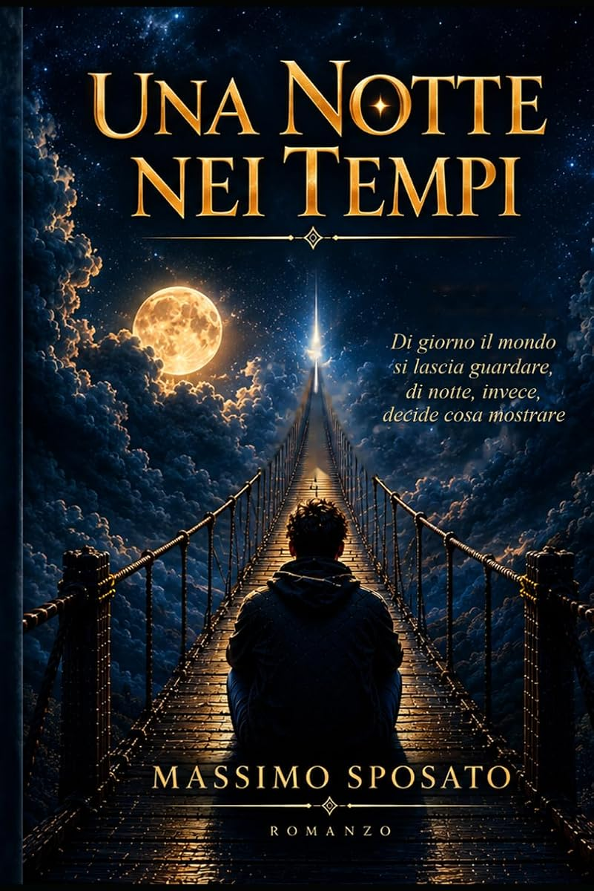
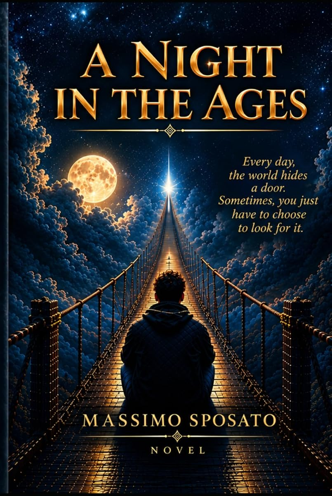

Edizione italiana
Una Notte nei Tempi
Di giorno il mondo si lascia guardare, di notte, invece, decide cosa mostrare.
- Lingua: Italiano
- Pagine: 213
- Formati: Copertina flessibile, rigida, Kindle
Romanzo · Massimo Sposato
«Di giorno il mondo si lascia guardare, di notte, invece, decide cosa mostrare.»
Un viaggio tra sogni, segreti e nuove scoperte: un uomo qualunque esce di casa, e la notte comincia a parlare.

Disponibile su AmazonRomanzo fantasy e romantico · 213 pagine
Il romanzo
C'è un'ora sospesa tra il giorno e la notte in cui il mondo sembra trattenere il respiro. È l'istante in cui le strade smettono di essere soltanto strade e diventano domande che nessuno ha ancora avuto il coraggio di pronunciare.
Spinto da un richiamo che non sa spiegare, un uomo qualunque esce di casa. Una semplice passeggiata notturna si trasforma in un viaggio oltre la realtà, dove il tempo non è più una linea ma un cerchio, e ogni passo lo avvicina a verità dimenticate, mai dette, mai affrontate.
Sul suo cammino incontrerà figure straordinarie: esseri che hanno segnato in silenzio il corso della storia senza mai apparire nei libri. Tra loro c'è la Donna delle Lettere Mai Inviate, legata ai segreti da un vincolo più profondo di quanto lei stessa osi confessare.
«Ogni sogno ha una storia. Bisogna solo trovare il coraggio di raccontarla.»
Le edizioni
Il romanzo è disponibile in italiano e in inglese. Ordina la tua copia direttamente su Amazon, in formato cartaceo o Kindle.
Edizione italiana
Di giorno il mondo si lascia guardare, di notte, invece, decide cosa mostrare.

Edizione inglese
By day the world lets itself be seen; by night, it chooses what to show.
Spedizione e disponibilità sono gestite da Amazon. I link si aprono in una nuova scheda.
Una storia che non consola: sussurra. Non spiega: chiama. Non illumina: insegna a vedere nel buio.
Resta in contatto
La notte continua anche online
Video, letture e aggiornamenti sul romanzo: seguimi sui canali ufficiali.